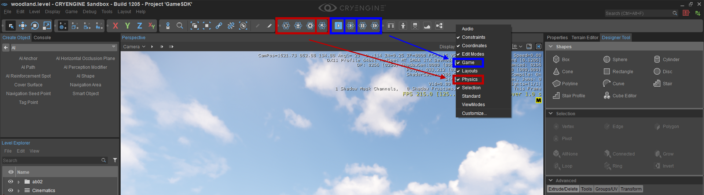

Обзор
Инструмент «Физика» — полезный инструмент для проверки физики. из твой объекты. Это расширение режима AI/Физика, которое позволяет пользователю взаимодействовать с размещенными объектами в мире, не входя в игровой режим.
Расположение
Этот инструмент можно найти на Физика панель инструментов, которую можно добавить в UI, щелкнув правой кнопкой мыши в области панели инструментов редактора.
Инструмент «Физика» — это четвертая кнопка на выделенной красной панели инструментов.
Также вам понадобится Игра Панель инструментов активна, поэтому вы можете включить режим AI/Физика.

Как использовать
Если на UI активны обе панели инструментов:
- Активируйте режим AI/Физика (выделен в синий выше). Это переводит редактор в режим симуляции.
- Нажмите кнопку «Физический инструмент», чтобы включить режим манипуляции (выделен на рисунке). красный выше).
Теперь вы можете выбирать физикализированные объекты на сцене и взаимодействовать с ними.
Элементы управления
Используя LMB отдельно или в сочетании с Ctrl и Сдвигмы можем манипулировать объектами по-разному. В зависимости от того, где вы «схватили» объект, это будет его точка поворота (примеры будут приведены позже). Как только объект будет выбран, он отобразит физический прокси для объекта, чтобы вы могли видеть физическую сетку. После освобождения объект вернется в обычный режим рендеринга.
| Ввод | Имя | Описание |
|---|---|---|
| Удерживайте LMB | Пинч | Захватите объект под курсором мыши и получите полный обзор на 360 градусов без ограничений движения. Объект будет полностью физизирован и будет прикреплен к мыши, пока вы не отпустите LMB. |
| Держать Ctrl+LMB | Ось зажима заблокирована | Захватите объект под курсором мыши, и ваше движение объекта будет зафиксировано только в плоскостях X и Y относительно видового экрана. (Его вращение заблокировано, а перемещение — нет. TОбъект не будет вращаться.) |
| Удерживайте Shift+LMB (затем отпустите) | Режим огня | Этот режим превращает действие курсора мыши в снаряд. Чем дольше вы держите Сдвиг, тем больше будет нарастать "импульс" этого снаряда. Максимальный уровень раскачки достигается после удержания Сдвиг в течение 3 секунд. Нарастание «импульса» отражается появлением красной сферы под курсором мыши. Чем дольше вы удерживаете Shift и LMB, чем больше становится красный шар, чтобы «предварительно просмотреть» прикладываемый импульс. Чтобы «выпустить» снаряд, отпустите кнопку LMB и импульс будет приложен в направлении камеры.
|
Когда выбранный объект активный, это привязаны к мыши с помощью ограничения, которое связывает их вместе. Если вы проведете по объекту, удерживая мышь, вы увидите тонкую синюю линию, обозначающую ссылку. Это звено имеет эластичный компонент (резиновую ленту), который обеспечивает некоторую свободу движения на высоких скоростях. После отмены выбора ссылка будет удалена. Он создается только временно при выборе и впоследствии уничтожается.
Использование
Этот инструмент можно использовать для тестирования различных физикализованных объектов. Выше мы рассмотрели режимы взаимодействия. Они применимы ко всем типам объектов/сущностей, но есть и более конкретные элементы управления для таких вещей, как одежда и растительность.
Захват ткани
Удерживать LMB чтобы выбрать вершину в сетке и потянуть ткань вокруг. Это будет моделировать физикализацию ткани. Перетаскивание объекта ткани за пределы его физических пределов (слишком сильное растягивание) возможно и не вызывает никаких проблем. (Это просто выглядит странно; это только для тестирования!) Опять же, держа Ctrl+LMB заблокирует ось и удержит Shift+LMB позволит вам выстрелить снарядом в ткань.
Растительность
Опять же, используя все три режима, описанных выше, мы можем взаимодействовать с растительностью (при условии, что ваш актив настроен на сенсорное сгибание). Вы можете потянуть листья или запустить снаряд в крону, чтобы имитировать движение пальмовых листьев (если ваш актив — пальма).
Также в режиме снаряда мы можем сломать ствол дерева long, если приложим достаточный импульс для разрушения (при условии, что ваш актив оснащен разрушаемым багажником).
Персонажи
CRYENGINE Sandbox также поддерживает взаимодействие с персонажами/AI. Используя все три комбинации инструментов, мы можем перемещать и стрелять в сустав/скелет персонажа, чтобы проверить его реакцию при подаче импульсов.
Техническая информация
В следующем разделе объясняется, как обрабатывается реализация, в зависимости от класса сущности, с которым вы пытаетесь взаимодействовать.
- Вытягивание обрабатывается путем добавления ограничения между объектом и невидимым твердым телом с нулевой массой (созданным внутри), за исключением ткани и актеров. Ткань использует специфическое для ткани прикрепление вершин, а актеры используют временную веревку нулевой длины (поскольку они не поддерживают ограничения) с кинематическими (0-массовыми) твердыми телами.
- Для попаданий по объектам, отличным от static (режим огня), используйте общий импульсный интерфейс (актеры также добавляют тот же импульс к физическому скелету персонажа, если он присутствует). Для объектов static создается и запускается временная искусственная частица пули. Это позволяет ему взаимодействовать с хрупкой растительностью.
CVars
Есть несколько связанных переменных, которые управляют скоростью/давлением и т. д., но они предназначены только для справки. Нет необходимости изменять их.
Квар/Команда | Описание |
|---|---|
| ed_PhysToolHitVelMin | Минимальная скорость в режиме мгновенного попадания |
| ed_PhysToolHitVelMax | Максимальная скорость в режиме мгновенного попадания |
| ed_PhysToolHitProjMass | Масса снаряда в режиме попадания снаряда (по статике) |
| ed_PhysToolHitProjVel0 | Минимальная скорость снаряда в режиме попадания снаряда (по статике) |
| ed_PhysToolHitProjVec1 | Максимальная скорость снаряда в режиме попадания снаряда (по статике) |
| ed_PhysToolHitExplR | Радиус взрыва |
| ed_PhysToolHitExplPress0 | Ударный взрыв минимального давления |
| ed_PhysToolHitExplPress1 | Максимальное давление удара взрыва |